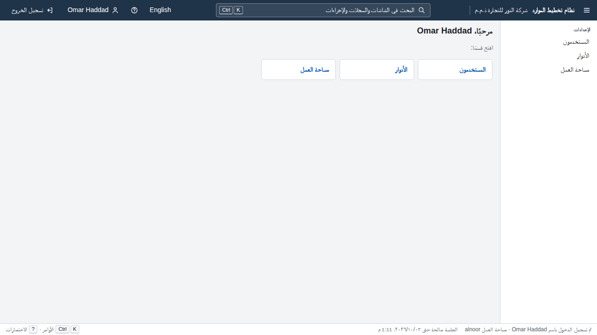
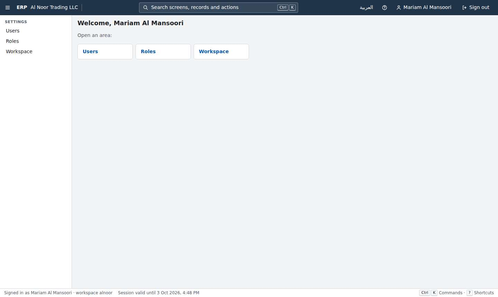
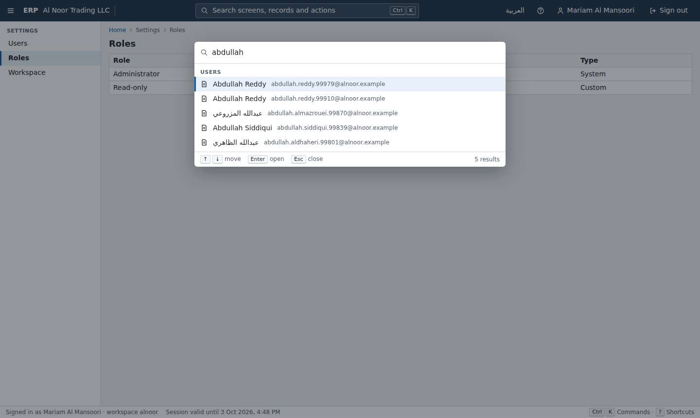
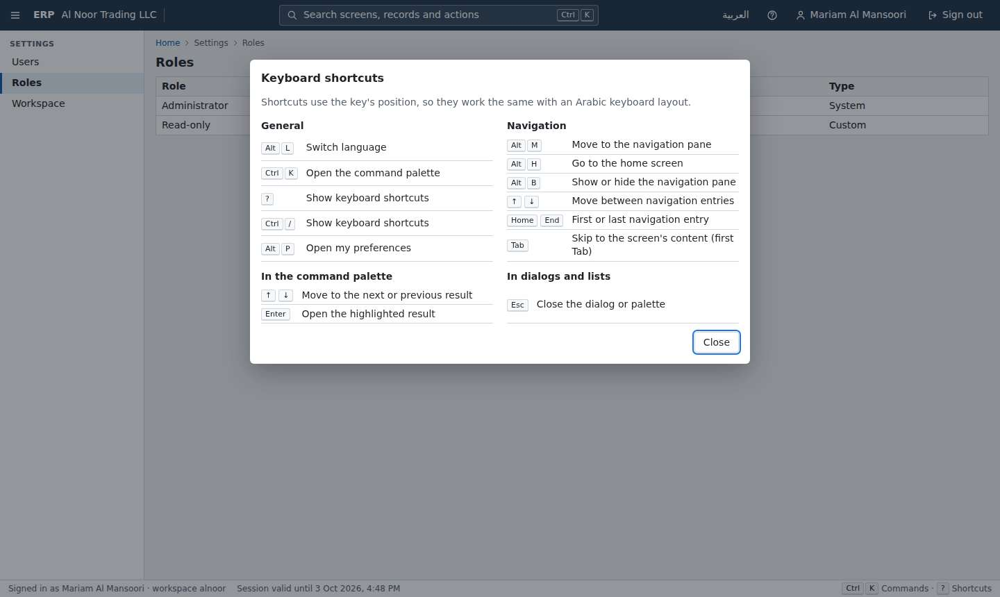
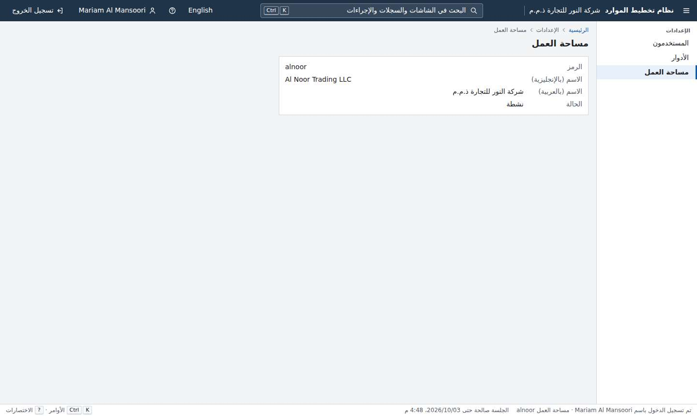
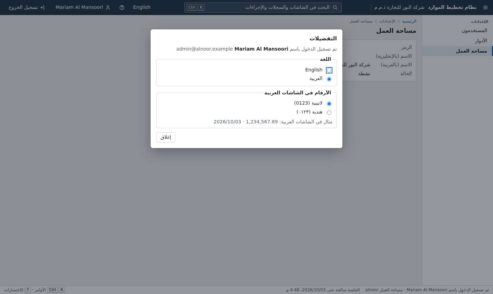
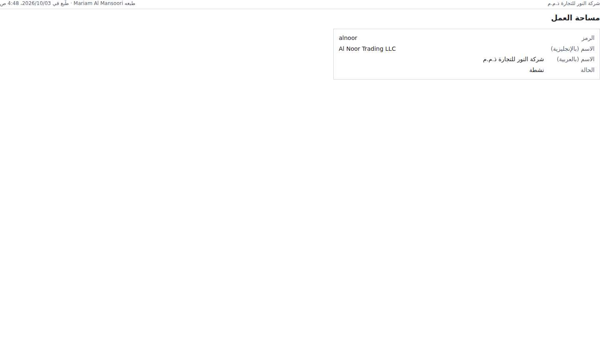
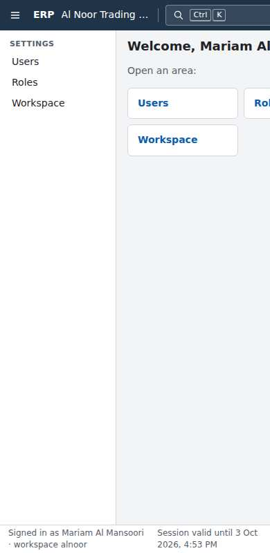

Gauntlet progress
Platform core, judged piece by piece against the owner's bar and Odoo Community. Rebuilt from gauntlet/verdicts/ by gauntlet/tools/record.mjs. Full evidence in ledger.md; owner items in needs-human.md.
Foundation and hard gates
Wave 0 · 2 rounds judgedG1 HTTP sends tenant B's id in only six fixed header names (X-Tenant-Id, X-Tenant, Tenant-Id, X-Company-Id, X-Forwarded-Host, an erp_tenant cookie) and three fixed body names (tenantId, tenant_id, companyId). Body uuid fields otherwise get a random B id, so the tenant id lands there only by chance. Nothing checks how the tenant gets bound. Any code may call set_config('app.tenant_id', …) or IgnoreQueryFilters(), and nothing checks that the tenant each request's SQL runs under is the signed-in user's tenant. An endpoint that switches tenant on any header or field name not in those lists passes the whole gate, even though the spec says the tenant comes only from the session. Every later module (contacts, documents, imports, jobs) adds handlers that could do this. Fix: (a) A source gate, like the existing one for reviewed functions: only ErpDbSession may name app.tenant_id or app.tenant_tx, and IgnoreQueryFilters/FromSql only in reviewed files. (b) A runtime check in the existing SqlTrace: inside an authenticated request, every statement after binding must run with current_tenant_id() equal to the principal's tenant claim. (c) A deterministic phase that sends B's tenant id in every uuid body field and in every X-* header seen in the app's source. A related G2 blind spot: a POST/PUT/PATCH/DELETE endpoint may declare a *.read permission. A cheap rule (state-changing methods never declare an action named read) closes it.
- G1 tenant isolation (product as built) PASS — Gate suite passes. My own HTTP attack against the running demo (attack/http_attack.py, http_attack.out) signed in as alnoor admin (cookie and bearer), viewer, noaccess and anonymous. It sent 2,526 requests carrying gulfsteel ids in routes, 8 tenant-switch header variants including X-Erp-Workspace and Host, tenant query names, body tenantId/workspaceId fields, and every B e-mail, name and role name through search/q/email/code/name/filter. Result: 0 leaks, 0 server errors, B's checksums unchanged. Sign-in with workspace=gulfsteel kept the alnoor tenant. A B e-mail and an unknown e-mail get the same 401. As erp_app (db-attack-app-role.txt): 0 rows with no tenant set. With tenant A bound, B rows were invisible and inserting or moving rows into B was refused by RLS. A session-level app.tenant_id was ignored. DISABLE/NO FORCE RLS, SET ROLE owner/auth, row_security=off, UPDATE/DELETE on audit.entries, CREATE in schemas, COPY to file and pg_read_file were all denied. resolve_login returns nothing inside a bound transaction. No exports, jobs or file paths exist yet.
- G1 tenant isolation (gate catches planted faults) FAIL — Planted 3 tenant leaks in a scratch copy. A-db (migration disables RLS on identity.user_roles) was caught: the migrator refuses to start, 45/45 tests fail (plant-A-db.log). A-body (POST /api/identity/users/query trusts workspaceId in the body) was caught, but only because random B ids in body uuid fields happened to include the tenant id (plant-A-body.log). A-hdr was MISSED: GET /api/identity/users honours an X-Erp-Workspace header by running set_config('app.tenant_id', header, true) and IgnoreQueryFilters(). Gate suite: 45/45 passed, rc=0 (plant-A-hdr.log, plant-A-hdr.diff). The proof test plant-A-hdr-proof-test.cs passes: a tenant A admin with that header gets tenant B's users, e-mails and canary names back (plant-A-hdr-proof.log).
- G2 permissions (product as built) PASS — All 13 G2 tests pass: fallback deny, anonymous allowlist, grant exactly one, no-roles user denied, grant escalation. In the browser, noaccess@ gets 'No access' at /identity/roles (10-noaccess-direct-url.jpg). viewer@ sees only the Previous/Next buttons on Users.
- G2 permissions (gate catches planted faults) FAIL — P1 (PermissionAuthorizationHandler succeeds for any signed-in user) was caught by 3 G2 tests (plant-P1.log). P3 (round 1's fault: WithinCaller removed on POST /api/identity/users) was caught by 2 tests, so the round 1 gap stays fixed (plant-P3.log). P2 was MISSED: POST /api/identity/users/{id}/reactivate is a write that reactivates and unlocks a user, and it declares only identity.users.read. Full gate suite: 45/45 passed (plant-P2.log, plant-P2.diff). The proof test plant-P2-proof-test.cs passes: a user holding only identity.users.read reactivates a user an administrator deactivated (204, isActive true; plant-P2-proof.log). Nothing stops a state-changing method from declaring a read permission.
- G3 clean clone PASS — `./erp verify` (project c-p00-foundation-r2, verify ports 20060/20061): 154 tests passed, rc=0, 150 s (verify.log). `./erp up` on 20050/20051 seeded 100,004 + 1,004 users and served in 31 s (up.log). `./erp verify --clean-clone` (fresh clone, verify, up, HTTP sign-in on 20080/20090) passed: rc=0, 195 s (g3-clean-clone.log). Timings are warm: the toolbox image and the NuGet/npm cache volumes already existed on this machine.
- Rule gates (licence, float money, EN/AR strings with plurals, audit coverage, OpenAPI, ratchet) PASS — All pass in the suite, and the ratchet check passed (126 .NET / 19 web unit / 9 e2e against minimums of 126/19/9). By hand, API writes left field-level audit rows with actor, kind and correlation id (audit-sample.txt). Two ISC npm packages wait for owner approval in needs-human #3.
154 / 154 passed
0 failed · 0 skipped · 150s
Clean clone → demo: PASS in 195s
| Task | Ours | Odoo | Winner |
|---|---|---|---|
| sign in to an empty workspace | 4 · 36 · 0.44s · 12.8s | – | not-compared |


Round 2 · judged 2026-10-03T00:02:23Z · commit c71d20e802
Odoo reference rig and blind comparison harness
Wave 0 · 2 rounds judgedThe round-1 static-cache gap is now covered by a reflection inventory and by two-tenant concurrent activity. Each of those checks still has a blind spot, and together they let a real leak ship. (1) ProcessState.InspectTypes skips every compiler-generated type (IsGenerated), so state captured by an endpoint lambda (a `<>c__DisplayClass`) is never inventoried. Minimal-API handlers written as lambdas are the most common place for that state. (2) The HTTP judges (TenantActivity.SendAsync and IsolationAttack.Judge) search only the response body and the Location header for the other tenant's markers. Every other response header (ETag, Content-Disposition for exports, custom headers, Set-Cookie, Link) is never examined. With both, tenant A's admin receives tenant B's id, code and name, and the whole gate suite stays green. Fix both: inventory fields of closure display classes reachable from endpoint delegates (or forbid captured mutable locals in endpoint mapping), judge every response header in both directions, and add self-tests for a closure cache and a header leak.
- G1 tenant isolation (product as built) PASS — Gate suite passes in ./erp verify. My HTTP attack ran as the alnoor admin while the gulfsteel admin was active and warmed every GET. It sent 163 requests with B's user and role ids, tenant id, code and e-mails in routes, queries and six tenant-switch header and cookie variants. It also tried PUT and DELETE on B's users and roles and POST user with B's role ids. Result: 0 leaks in bodies or headers. Writes returned 404 or 400, and B's tenant was unchanged (attack/http_attack.out). As erp_app (db-attack-app-role.txt): unbound, 0 rows. With the GUC set but no transaction marker, 0 rows. Bound to A, only A's 100,004 users and A's audit and roles rows. UPDATE on B changed 0 rows. INSERT into B was refused by RLS. DISABLE RLS was refused (not owner). SET ROLE erp_owner was denied. The only SECURITY DEFINER functions are resolve_login and resolve_session (reviewed). No exports, jobs or file paths exist yet.
- G1 tenant isolation (gate catches planted faults) FAIL — Plant B was MISSED. In TenancyEndpoints.Map, a lambda-captured `string? previousCaller` (a closure, not a static field or singleton) stores the last caller's workspace. GET /api/tenancy/tenant returns it in a response header, X-Previous-Workspace (plants/plant-B-closure-header.diff). The gate suite still passed: rc=0, 105 s (plants/plant-B-closure-header.log). A proof test passed: tenant A's admin received 'X-Previous-Workspace: 0190a000-0000-7000-8000-00000000000b bravocnryea73bbffc3 Bravo CNRYEA73BBFFC3 LLC' (plants/CriticPlantProof.cs, plants/plant-B-proof.log). There are two blind spots. ProcessState.IsGenerated skips compiler-generated closure classes. TenantActivity.SendAsync and G1HttpIsolationTests judge only the body and the Location header, never other response headers. Three other plants were caught. Plant A (the same closure cache returning B's DTO in the body) failed G1HttpIsolation with 214 leaks and the gate self-test. Plant C1 (roles policy `OR current_tenant_id() IS NULL`) failed 3 G1 database tests. The round-1 plant (a static cache) is now covered by the gate self-test LeakyModule bug 9.
- G2 permissions (product as built) PASS — Every G2 test passed in ./erp verify: exactly-one-permission matrix, no-roles user denied everything and sees no menu, grant escalation, fallback deny, anonymous 401s. The e2e 'a user whose roles grant nothing sees no menu' passed.
- G2 permissions (gate catches planted faults) PASS — Plant D1 added POST /api/tenancy/tenant/suspend with RequireAuthorization() only. The host refused to start ('declares no permission') and every gate test failed (plants/plant-D1-no-permission.log). Plant D2 guarded PUT /api/tenancy/tenant with tenant.read instead of tenant.update. It was caught by Every_declared_permission_is_in_the_catalogue_and_every_catalogue_permission_is_used (plants/plant-D2-write-guarded-by-read.log). Only that test caught it, and only because tenant.update became unused. The matrix test trusts each endpoint's declared permission, so a write guarded by a read permission that is used elsewhere would pass.
- G3 clean clone PASS — From my clone at 5a3c97f, with ERP_PROJECT=c-p01-odoo-rig-r2 and ports 20150/20151/20160/20161: `./erp verify` returned rc=0 in 163 s with 224 tests passed and the ratchet passed (verify.log). `./erp up` returned rc=0 in 24 s and served the seeded demo on 20150 (up.log). `ERP_SEED_USERS_CSV=gauntlet/compare/data/out/users.csv ./erp up` returned rc=0 in 25 s and loaded exactly the dataset's 100,000 users, which match the rig's 100,000 dataset logins (up-shared-dataset.log). The Odoo rig from empty volumes (ODOO_REF_PROJECT=c-p01-odoo-rig-r2-odoo, ODOO_REF_PORT=20152) returned rc=0 in 160 s, with every main list at 100,000 or more. A second run took 12 s and added no data rows (rig-up-first.log, rig-up-second.log). Ports and project names are overridable as documented. All timings are warm-cache (images, NuGet and npm present).
- Rule gates (licence, float money, EN/AR strings, audit, OpenAPI, ratchet) PASS — All pass in ./erp verify. Ratchet check passed, and counts match or exceed gauntlet/ratchet.json: dotnet 129, web 19, e2e 9, compare 67. The harness's only dependency is playwright-core 1.56.1 (Apache-2.0, pinned).
224 / 224 passed
0 failed · 0 skipped · 163s
Clean clone → demo: PASS in 163s
| Task | Ours | Odoo | Winner |
|---|---|---|---|
| sign-in | 4 · 57 · 0.248s · 19.06s | 4 · 57 · 1.162s · 19.06s | tie |
| find-record | – | 5 · 30 · 0.973s · 18.5s | not-compared |
| create-restricted-user | – | 10 · 46 · 5.825s · 34.13s | not-compared |
| custom-field-filter | – | 17 · 61 · 2.345s · 54.83s | not-compared |
| switch-to-arabic | – | 6 · 1 · 1.704s · 15.28s | not-compared |
| import-5000 | – | 7 · 0 · 10.212s · 17.4s | not-compared |
| follow-approval | – | 4 · 0 · 1.443s · 10.6s | not-compared |
| switch-company | – | 2 · 0 · -0.099s · 5.3s | not-compared |
| add-rate, arabic-report, attach-file, configure-sequence, create-company-branch, edit-and-save, export-filtered-list, keyboard-navigation, see-and-rerun-job, who-changed-field | – | – | not-compared |


Round 2 · judged 2026-10-03T02:03:56Z · commit 5a3c97fbc2
Tenants, companies and branches
Wave 1 · 0 rounds judgedWaiting for its first critic.
Users, roles and permissions
Wave 1 · 0 rounds judgedWaiting for its first critic.
English/Arabic app shell
Wave 1 · 1 round judgedThe shell's only write endpoint is PUT /api/identity/me/preferences, which this piece extended with numerals. The gates do not protect it against process-shared state held in a lambda closure. G1ProcessStateTests skips compiler-generated types (IsGenerated, G1ProcessStateTests.cs:105/249), so a <>c__DisplayClass capture is never inventoried. G1's tenant B writes each endpoint once during warm-up, and TenantActivity.TouchAsync re-touches only GET endpoints right before tenant A attacks an endpoint (TenantActivity.cs:233-241), so B never writes /me/preferences just before A calls it. Any state that one tenant's write leaves and the next caller reads therefore goes unseen, whether it reaches the next caller through the body or a header. The same blind spot was named in p01 round 2 and is still open at this commit. Every later module that adds a write endpoint (approvals, numbering, imports) inherits it. Fix: inventory closure-captured fields of mapped endpoint delegates. Have tenant B call each write endpoint with a valid body immediately before every tenant A call of that endpoint, then judge A's body and every header for B's markers. Keep plants P1b and P1c as gate self-tests.
- G1 tenant isolation (suite and my own attacks on the product as built) PASS — The gate suite passed 53/53 inside ./erp verify. My HTTP attacks as alnoor (A) against gulfsteel (B) found no leak (attack-http.txt). I tried PUT /api/identity/me/preferences with B's userId, tenantId and id in the body; the X-Tenant-Id, X-Tenant, X-Workspace and X-User-Id headers on the session and preferences calls; query tenantId and workspace; GET and PUT /identity/users/{B id}; and a users search by B's e-mail. B's preferences were unchanged afterwards. As the database app role erp_app (attack-db-app-role.txt), an unbound read returned 0 rows and a read bound to A returned 0 rows of B. The UPDATE of B's row affected 0 rows. SET row_security=off was refused. erp_app and erp_owner have no BYPASSRLS. identity.users, roles, user_roles and sessions have RLS enabled and forced.
- G1 catches a tenant leak planted in this piece's surface FAIL — I planted the leak in PUT /api/identity/me/preferences, the preferences endpoint this piece extended. A closure-captured `previous` array in ProfileEndpoints.Map hands the previous caller's SessionUser to the next caller. The live demo of the planted build leaked: B saves a preference, then A's PUT returns admin@gulfsteel.example (plant-P1-leak-demo.txt). Variant P1b puts B's e-mail in a response header (X-Erp-Previous-Editor) and keeps the body correct. Variant P1c appends ' (after <B e-mail>)' to displayName in the body. Both passed Erp.Gates.Tests 53/53 and Erp.Modules.Identity.Tests 24/24 (plants/P1b, plants/P1c). A static-field version of the same leak (P3) was caught by G1ProcessStateTests and G1HttpIsolationTests.
- G2 permissions PASS — Plant P2 replaced RequirePermission(ProfileUpdate) with RequireAuthorization() on /me/preferences. ErpPlatform.ValidateEndpoints refused to start ('PUT /api/identity/me/preferences declares no permission'), so 53 gate and 24 identity tests failed. Plant P4 offered the palette's record sources without the permission filter. The web unit test AppShell.test.tsx caught it (63/64; the users API was called for a user without identity.users.read), and tsc also rejected that code. In the browser, no-access screens and the palette show only what the role grants.
- G3 clean clone: one command builds, migrates, seeds and passes all tests FAIL — `ERP_PROJECT=c-p04-shell-r1 ERP_HTTP_PORT=20450 ERP_DB_PORT=20451 ERP_VERIFY_HTTP_PORT=20460 ERP_VERIFY_DB_PORT=20461 ./erp verify` exited 1 after 647 s. shell.spec.ts:135 'Arabic-Indic digits are a per-user choice that follows the user' failed: input[name=email] was not found after sign-out because the user was still signed in (01-e2e-digits-test-still-signed-in.png, verify.clean.log). Rerun against a fresh stack, it failed 2 of 4 times. `./erp up` brought the 100,000-user demo up in 42 s.
- Rule gates (licences, no float money, English/Arabic strings, audit, logical CSS, kernel formatter, accessibility) PASS — String check passed: 140 keys in English and Arabic, 4 plural messages. The accessibility check passed (239 JSX elements). The ShellGateTests and the licence, money and audit gates were in the 53 passing. Each preference change wrote an audit.entries row with actor and old/new values for language and numerals. The ratchet check was not reached because verify failed earlier, but the measured counts (140 .NET, 64 web unit, 21 end-to-end, 68 compare) equal the committed minimums and the ratchet diff only raises values.
292 / 293 passed
1 failed · 0 skipped · 647s
Clean clone → demo: FAIL in 647s
| Task | Ours | Odoo | Winner |
|---|---|---|---|
| switch-to-arabic | 1 · 0 · 0.075s · 2.65s | 6 · 1 · 3.657s · 15.28s | ours |
| reach-screen-keyboard (critic-added: reach a named screen, Users, by keyboard only) | 2 · 3 · 0.441s · 2.59s | 3 · 8 · 1.063s · 3.99s | ours |
| keyboard-navigation (open the third contact by keyboard) | – | – | not-compared |
















Round 1 · judged 2026-10-03T05:14:05Z · commit 893b42c05b
List and search framework
Wave 1 · 1 round judgedEvery list registered with p05 relies on G1 to catch leaks automatically, but G1 only flags a leak when one of tenant B's id or text markers shows up in a response. A shared cache in the list engine that carries tenant B's aggregates (totals, group counts, sums) into tenant A's answers passes every gate. The process-state gate also exempts the list bindings: ModuleCatalog._modules is reviewed wholesale, so instance fields of ListBinding<T> are never inspected. Grouping with totals is exactly where money modules will cache. The gate needs to (a) inspect ListBinding and other per-registration objects for mutable state, and (b) check list totals and group counts that tenant A receives against tenant A's own row count (for example, compare the first-page total with an exhaustive keyset walk, and the group counts with A-only database counts, after B ran the same queries). A second, smaller gate gap is G2: it never checks shared-view PUT/DELETE by a user who holds lists.views.share but not the list's permission.
- G1 tenant isolation (product as built) PASS — The gate suite passes (G1HttpIsolation: 51 endpoints, about 34,000 requests). My own attacks as admin@gulfsteel against alnoor (100,004 users) all came back clean: search, filters (eq, in, an injected quote, % and _ wildcards), groupBy, X-Tenant headers, tenantId/tenant query parameters, a replayed and a forged keyset cursor, GET/PUT/DELETE on alnoor's shared and personal view ids. Database: erp_app has no BYPASSRLS. It sees 0 rows unbound and 0 alnoor rows when bound to gulfsteel, and an insert into lists.saved_views for the other tenant is refused by RLS. Details in attack-api.txt.
- G1 catches faults planted in p05's surface FAIL — Plant L3 (plants/L3-engine-count-cache.patch) adds a 60-second count cache to ListBinding.QueryAsync, keyed by search and filter with no tenant. G1HttpIsolationTests still PASSED (plants/run-L3P1P2.log, 5 min 3 s). On a live stack the leak is real: gulfsteel searches 'a' and gets total 1004; alnoor then searches 'a' and gets total 1004, while its true count is 2005 (plants/plant-live-demo.txt). G1ProcessStateTests also passed with page-cache plants L1, L2 and L3, because ModuleCatalog._modules is allow-listed wholesale and ListBinding instances are never inspected. L1 (page cache) and L2 (closure-captured views cache) were caught by the HTTP attack (run-L1L2.log, 1498 leaks).
- G2 permissions (product as built) PASS — viewer: list 200, definition 200, personal view 201, create/delete shared view 403. noaccess: 403 on everything. Unauthenticated: 401. The gate suite passes.
- G2 catches faults planted in p05's surface FAIL — Plant P2 (plants/P2-delete-without-list-permission.patch) removes the list's own permission check from shared-view DELETE. All 17 G2 tests PASSED (plants/run-P2.log). Live: a user whose only role holds lists.views.share gets 403 on GET /api/lists/identity.users/views, but 204 on DELETE /api/lists/identity.users/shared-views/{id}, which deletes the workspace's Team view (plant-live-demo.txt). Plant P1 (sharing guarded by the read permission) was caught by Every_registered_list_is_readable_with_its_permission_alone.
- G3 clean clone PASS — Fresh clone at 0ab81d7. `ERP_PROJECT=c-p05-list-search-r1 ERP_HTTP_PORT=20550 ERP_DB_PORT=20551 ERP_VERIFY_HTTP_PORT=20560 ERP_VERIFY_DB_PORT=20561 ./erp verify` passed in 660 s and the ratchet check passed. `./erp up` with ERP_SEED_USERS_CSV (shared dataset) gave a running demo with 100,004 users in 58 s. Ports and project overrides worked.
- Rule gates (licence, money, strings, audit, list index) PASS — Pass inside verify. Saved-view insert, update and delete all write audit.entries with the actor and old/new values (checked in the database).
433 / 433 passed
0 failed · 0 skipped · 660s
Clean clone → demo: PASS in 660s
| Task | Ours | Odoo | Winner |
|---|---|---|---|
| find-user (find one user among 100,000; p16 contacts not built, so the critic used the largest list, users from the shared dataset) | 3 · 21 · 0.249s · 8.47s | 6 · 21 · 1.58s · 14.55s | odoo |


Round 1 · judged 2026-10-03T06:48:15Z · commit 0ab81d7f7f
Form and report framework
Wave 2 · 0 rounds judgedWaiting for its first critic.
Audit trail
Wave 2 · 0 rounds judgedWaiting for its first critic.
Multi-currency
Wave 2 · 0 rounds judgedWaiting for its first critic.
Tenant-defined custom fields
Wave 2 · 0 rounds judgedWaiting for its first critic.
Document numbering
Wave 2 · 0 rounds judgedWaiting for its first critic.
Attachments
Wave 2 · 0 rounds judgedWaiting for its first critic.
Background jobs
Wave 2 · 0 rounds judgedWaiting for its first critic.
Approval flows
Wave 3 · 0 rounds judgedWaiting for its first critic.
Import and export
Wave 3 · 0 rounds judgedWaiting for its first critic.
Documented API for everything
Wave 3 · 0 rounds judgedWaiting for its first critic.
Shared Contacts directory
Wave 2 · 0 rounds judgedWaiting for its first critic.